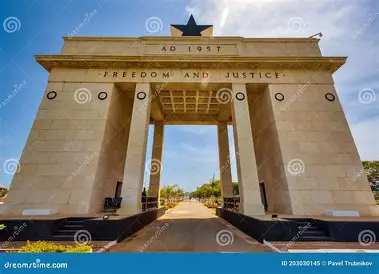
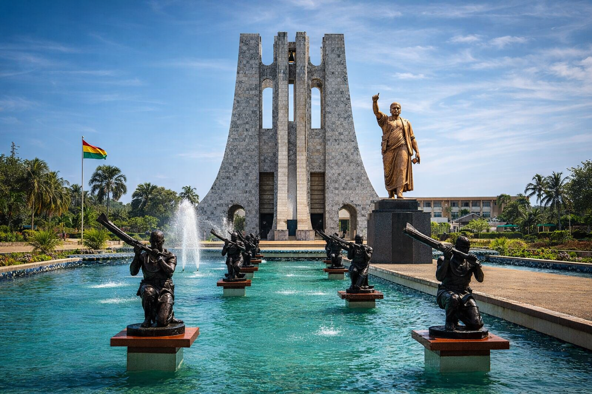

Kente Cloth
Handwoven colorful fabric representing wisdom, leadership and history.

Gateway to Africa
Ghana is famous for its welcoming people, rich culture, beautiful beaches, historic castles, wildlife, delicious cuisine, and vibrant cities.

Overview
Ghana became the first country in Sub-Saharan Africa to gain independence in 1957 under Dr. Kwame Nkrumah.
From Cape Coast Castle to Kakum National Park, Mole National Park, Lake Volta, and bustling Accra, Ghana offers unforgettable experiences.
Handwoven colorful fabric representing wisdom, leadership and history.
Ghana's famous rice dish enjoyed throughout West Africa.
A unique Ghanaian music style combining African rhythms and jazz.